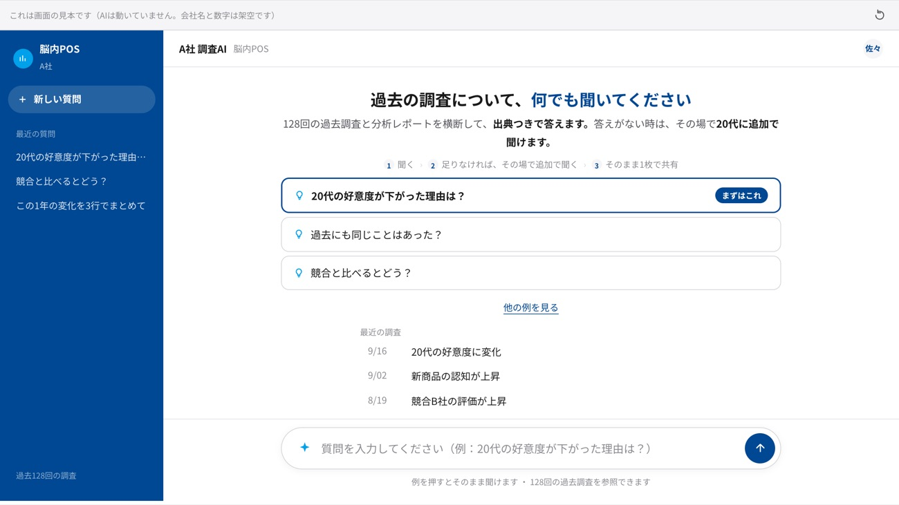
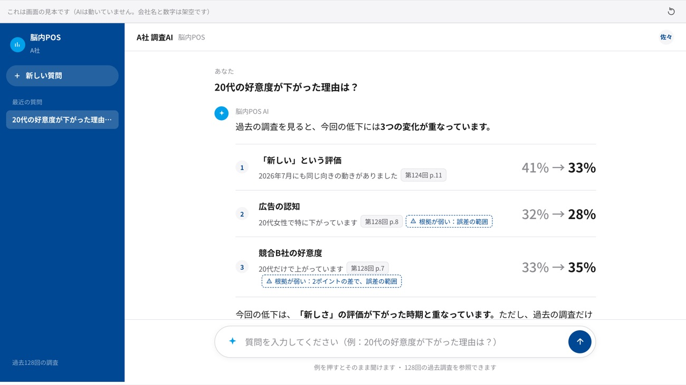
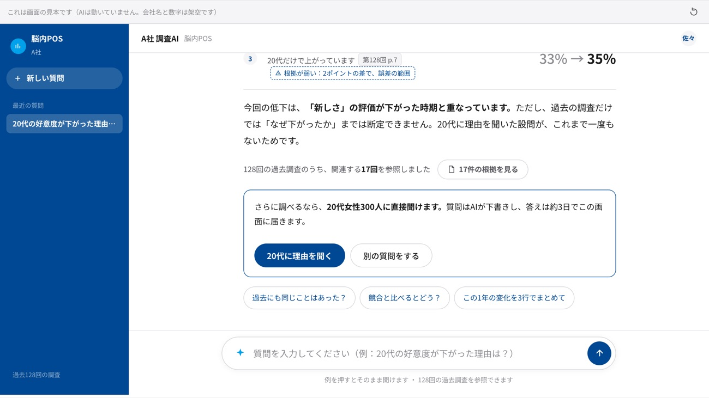
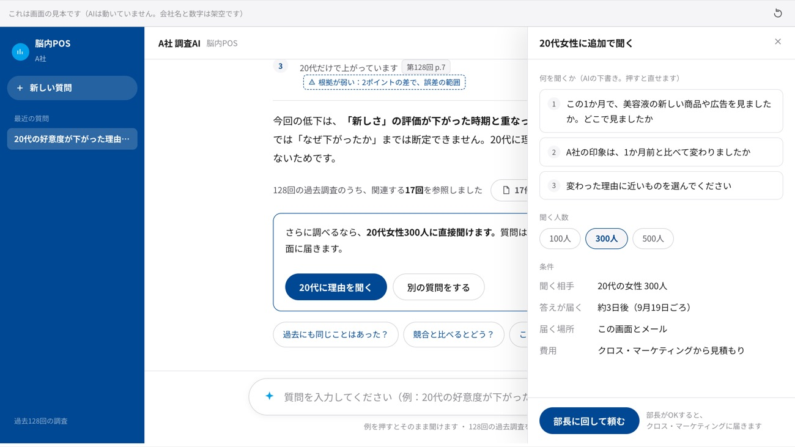
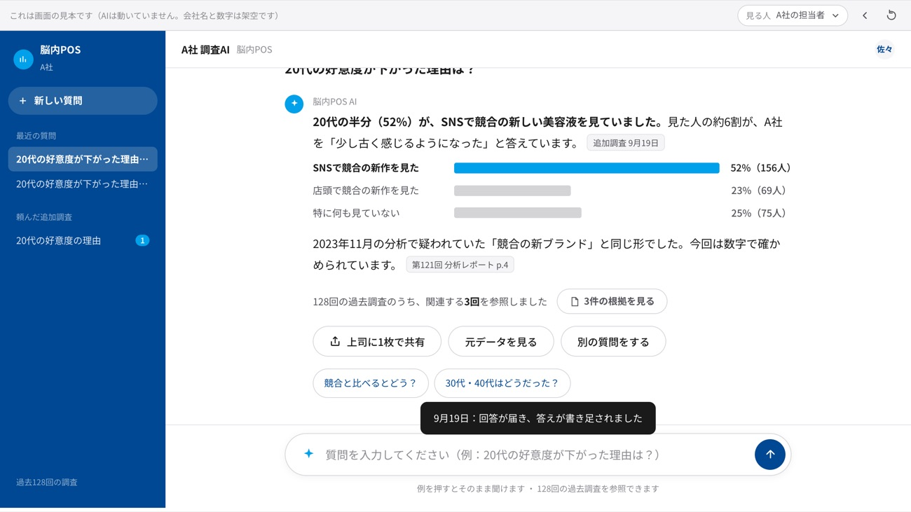
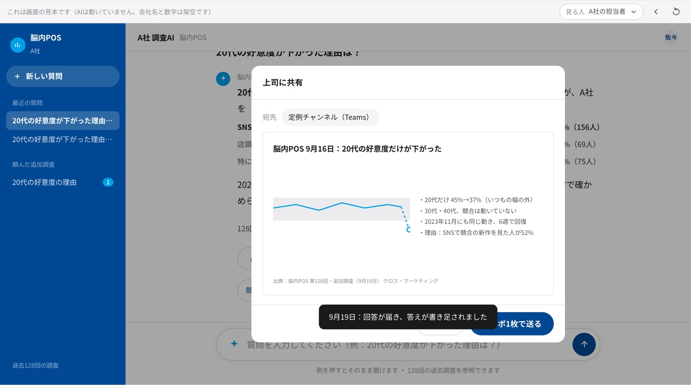
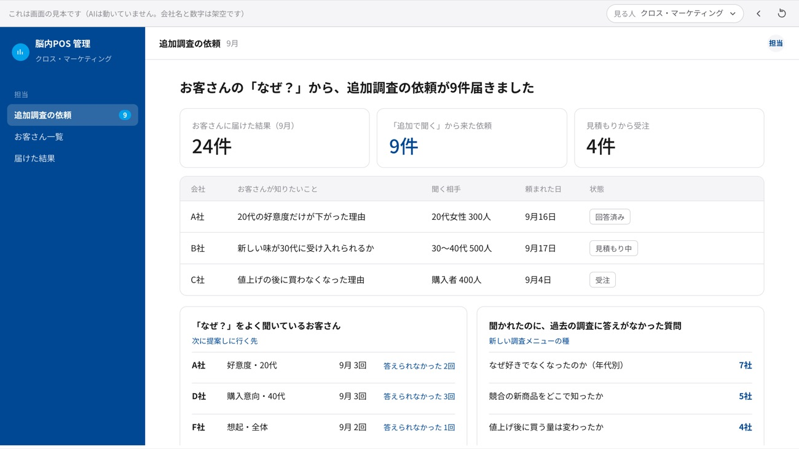

過去の調査に、そのまま聞ける。
128回分の調査と分析レポートを横断して、出典つきで答えます。
答えがない時は、その場で20代に追加で聞けます。
1聞く→
2答えが出る→
3足りなければ、その場で聞く→
41枚で共有
1
例を押すだけ
質問を考えなくていい

最初の画面はこれだけ。「まずはこれ」を押すと、そのまま質問が送られます。
↓
2
数字の変化で答える
文章より証拠

過去の調査から見つけた変化を、前後の数字で並べます。1つずつ出典が付きます。
↓
3
分からない時は、分からないと言う
ここが他と違う

弱い根拠には点線の印。断定せずに、その場で20代に聞くボタンを出します。
↓
4
聞く中身はAIが下書き
人数と納期を選ぶだけ

質問3つ、人数（100・300・500人）、約3日、費用。部長に回して頼みます。
↓
5
3日後、同じ場所に答えが届く
探さなくていい

聞いた会話の続きに書き足されます。20代の52%がSNSで競合の新作を見ていた。
↓
6
定例に出す1枚まで
担当者の本当の仕事

分かったことがパワポ1枚になります。出典つきのまま送れます。
↓
7
クロス・マーケティング側に届くもの
ここが売上

お客さんの「なぜ？」がそのまま追加調査の依頼に。答えられなかった質問は、次の調査メニューの種になります。
画面の見本です。AIはつないでいません。会社名と数字はすべて架空です。株式会社AIdollargame ／ 2026年9月